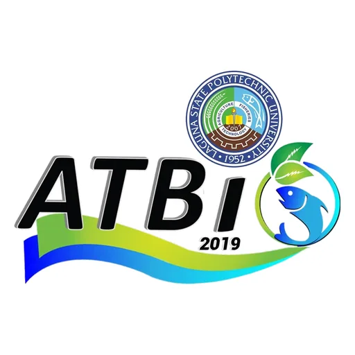

DOST-PCAARRD LSPU Agri-Aqua Technology Business Incubator (LSPU ATBI)
Laguna State Polytechnic University · Region IV-A
The DOST-PCAARRD-LSPU TBI Hub (Agri-Fishery & Natural Products) is a DOST-PCAARRD-funded Technology Business Incubator hosted by Laguna State Polytechnic University (LSPU) in Siniloan, Laguna. Part of the DOST-PCAARRD AANR TBI network, the LSPU TBI Hub focuses on incubating agri-fishery and natural products technology ventures in the CALABARZON region (Region IV-A) — a region where Laguna Lake’s fisheries, rice-based agribusiness, and natural products industries represent significant economic opportunities.
- Category
- Technology Business Incubator
- Host institution
- Laguna State Polytechnic University
- City
- Siniloan, Laguna
- Region
- Region IV-A
- Operating status
- Operating
About the Center
Laguna State Polytechnic University, with campuses across Laguna province, brings technical education and applied research expertise to the TBI. The LSPU TBI Hub targets innovators developing technology-based solutions in agri-fishery (aquaculture, freshwater fisheries, post-harvest), natural products (herbal medicines, essential oils, nutraceuticals), and related AANR sectors — helping transform applied research and entrepreneurial ideas into commercially viable technology enterprises.
Programs & Services
- Startup Incubation — Structured incubation for agri-fishery and natural products technology ventures, with workspace, mentorship, and business development support
- Agri-Fishery Innovation — Specialized support for enterprises in freshwater aquaculture, Laguna Lake fisheries, post-harvest fish processing, and agri-based value addition
- Natural Products Technology — Support for startups in herbal medicine, essential oils, nutraceuticals, and natural product-derived health and wellness products
- Business Development Advisory — Guidance on enterprise development, market access, regulatory compliance (FDA, DA), and investor readiness for AANR-based startups
- IP Management & Legal Advisory — Assistance with intellectual property filing, technology licensing, and legal compliance for incubated ventures
- DOST-PCAARRD Funding Access — Connections to DOST’s AANR funding instruments, SETUP grants, and national incubation network for technology scale-up
- Research Commercialization — Support for LSPU faculty and researchers translating applied agri-fishery and natural science research into market-ready innovations
Contact
Sources & references
- pcaarrd.dost.gov.ph/index.php/quick-information-dispatch-qid-articles/lspu-…
- facebook.com/lspuagriaqua
Details are drawn from public records and the sources above, July 2026.
Startupreneur Innovation Hub · synced from the Notion catalog (July 2026) · status: published.